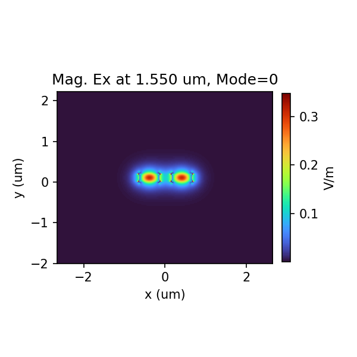
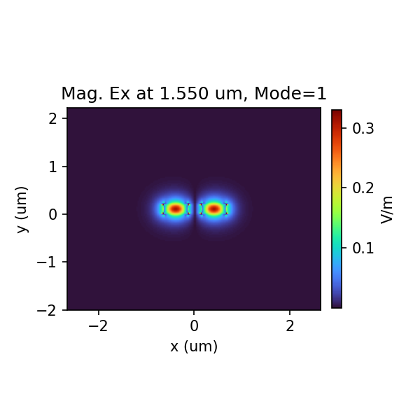
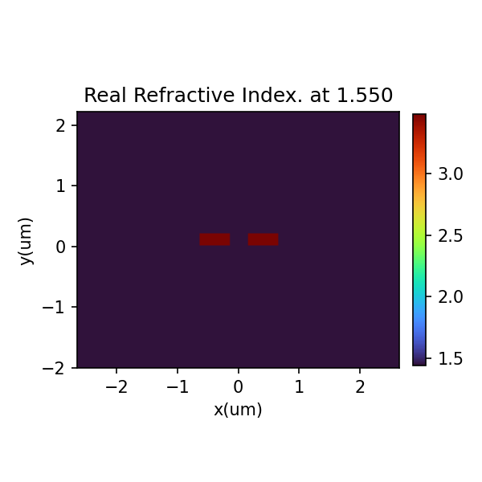
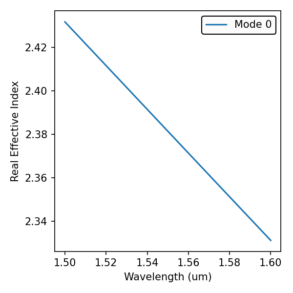
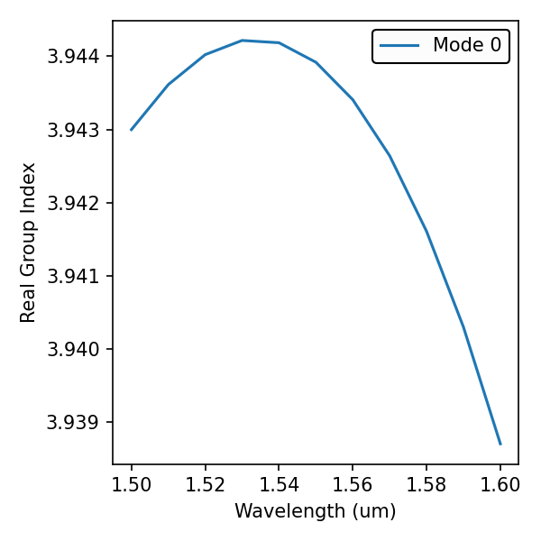
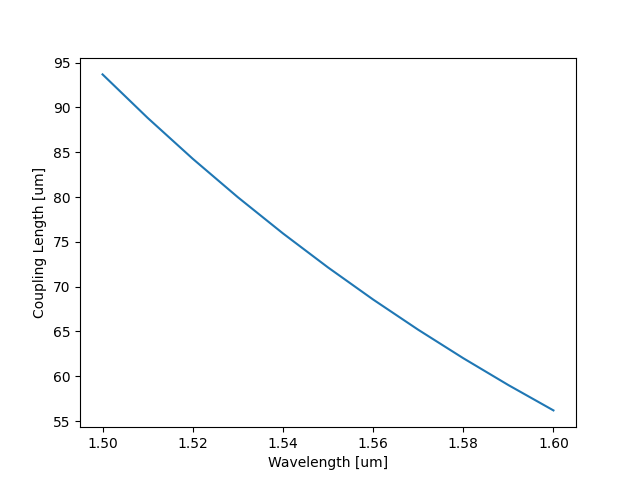

Directional Coupler - Coupling length
import gdstk
import os
from pyModeSolver.pyModeSolver import VFDModeSolver
from pyOptiShared.LayerInfo import LayerStack
from pyOptiShared.DeviceGeometry import DeviceGeometry
from pyOptiShared.Material import ConstMaterial,ExperimentalMaterial
import numpy as np
import matplotlib.pyplot as plt
from matplotlib.patches import Polygon
##########################################
### Waveguide function ###
##########################################
def directional_coupler(width=0.4, height=1.00, gap=0.35, center=(0,0), layer=1):
cx, cy = center
# --- Left Rectangle ---
# Extends from x = -gap/2 to x = -gap/2 - width
left_vertices = [
(cx - gap/2, cy), # Inner Bottom
(cx - gap/2 - width, cy), # Outer Bottom
(cx - gap/2 - width, cy + height), # Outer Top
(cx - gap/2, cy + height) # Inner Top
]
# --- Right Rectangle ---
# Extends from x = +gap/2 to x = +gap/2 + width
right_vertices = [
(cx + gap/2, cy), # Inner Bottom
(cx + gap/2 + width, cy), # Outer Bottom
(cx + gap/2 + width, cy + height), # Outer Top
(cx + gap/2, cy + height) # Inner Top
]
# Return a list containing two tuples (one for each rectangle)
return [(left_vertices, layer), (right_vertices, layer)]
parameters=(0.5, 0.22, 0.3, (0,0), 1) #width=0.4, height=1.00, gap=0.3, center=(0,0), layer=1
WG1=directional_coupler(*parameters)
fig, ax = plt.subplots()
polygon1 = Polygon(WG1[0][0], closed=True, facecolor="lightcoral", edgecolor="black")
polygon2 = Polygon(WG1[1][0], closed=True, facecolor="lightcoral", edgecolor="black")
ax.add_patch(polygon1)
ax.add_patch(polygon2)
# 1. Manually set x-limits to cover the negative coordinates
ax.set_xlim([-1, 1])
ax.set_ylim([-0.5, 1.5]) # Adjusted slightly to see the bottom at y=0
# 2. Optional: Force equal aspect ratio so the waveguides don't look distorted
ax.set_aspect('equal')
ax.set_xlabel('x [um]')
ax.set_ylabel('y [um]')
ax.set_title('Waveguide defined from function')
##########################################
### Material Settings ###
##########################################
substrate_mat = ConstMaterial("SiO2", epsReal=1.444**2, epsImag=0.0)
core_mat = ConstMaterial("Si", epsReal=3.48**2, epsImag=0.0)
##########################################
### Layer Stack Settings ###
##########################################
layer_stack = LayerStack()
layer_stack.AddLayer(number=1,material=core_mat, thickness=0.0, zmin=0, sideWallAng=0)
layer_stack.SetBGandSub(background=substrate_mat, substrate=substrate_mat)
##########################################
### Device Geometry/Port Settings ###
##########################################
device_geometry = DeviceGeometry()
device_geometry.SetFromFun(func=directional_coupler,
parameters=parameters,
layer_stack=layer_stack,
buffers={'x':2,'y':2,'z':2})
##########################################
### ModeSolver Settings ###
##########################################
num_wavelength=11
num_modes=2
lams=np.linspace(start=1.5,stop=1.6,num=num_wavelength)
mode_solver = VFDModeSolver()
mode_solver.SetBoundaries(min_x = "pmc", max_x = "pmc",
min_y = "pmc", max_y = "pmc")
mode_solver.SetSimSettings(device_geometry = device_geometry,
mesh={"dx": 0.025,"dy": 0.025, "dz": 0.025},
wavelength=lams,
nguess = 3.5,
nmodes = num_modes,
cut_plane = "XY",
cut_location = 0.0,
tol = 1e-8,
results_path = "./ModeResults",
device_name = "my_results")
##########################################
### Run and Post Processing ###
##########################################
results = mode_solver.Run()
# Compute coupling length
Neff=results.GetNeff()
Lc=np.zeros(num_wavelength,dtype=float)
for ii in np.arange(num_wavelength):
Lc[ii]=np.abs(lams[ii]/(2*(Neff[0,ii]-Neff[1,ii])))
plt.figure()
plt.plot(lams,Lc)
plt.xlabel('Wavelength [um]')
plt.ylabel('Coupling Length [um]')
## Built in plotting functions
for i in range(num_modes):
results.PlotMode(mode=i,field='Ex',plot_type='mag') # Fundamental Mode Profile
results.PlotPermittivity() # Material Profile
results.PlotIndex('neff',modes=[0]) # Effective Refractive Index
results.PlotIndex('ng',modes=[0]) # Effective Group Index
plt.show()
Fundamental Mode Profile (Odd)
{kind=link}

Fundamental Mode Profile (Even)
{kind=link}

Material Profile
{kind=link}

Effective Refractive Index
{kind=link}

Effective Group Index
{kind=link}

Coupling Length
{kind=link}
